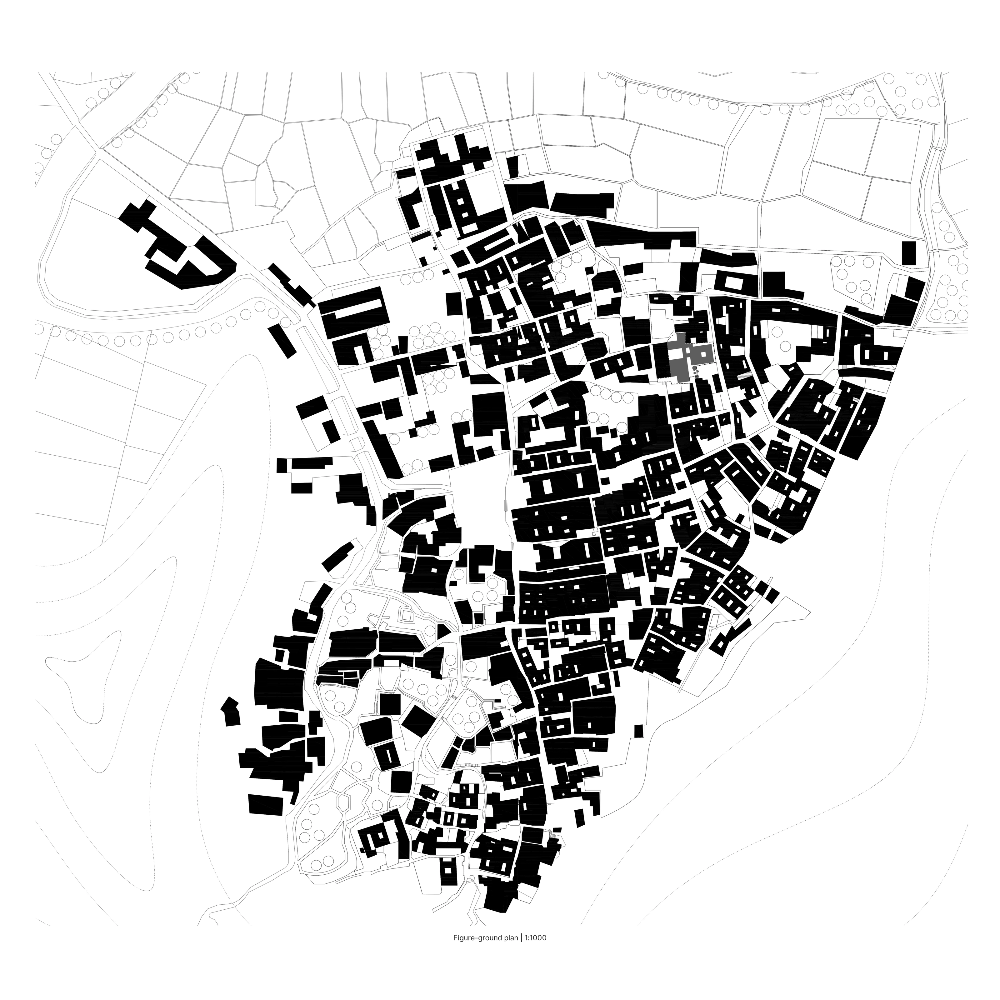
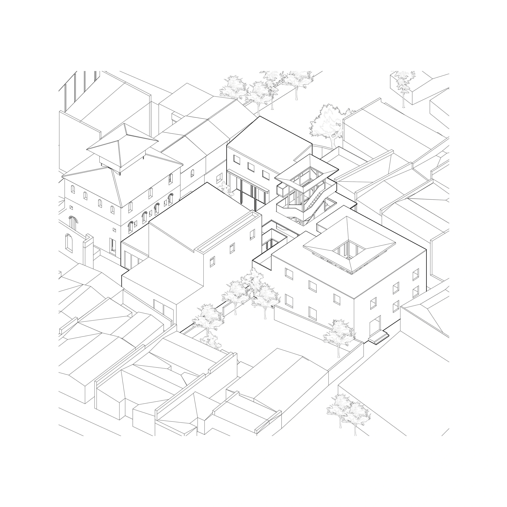
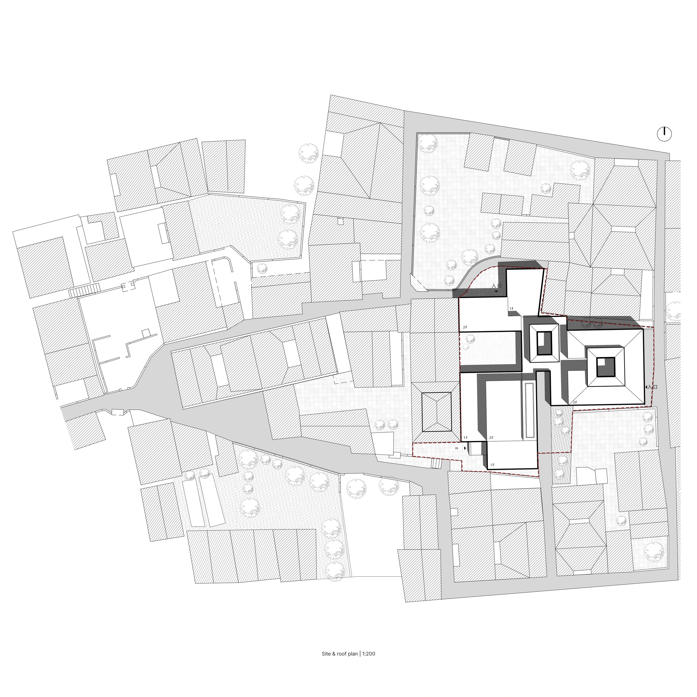
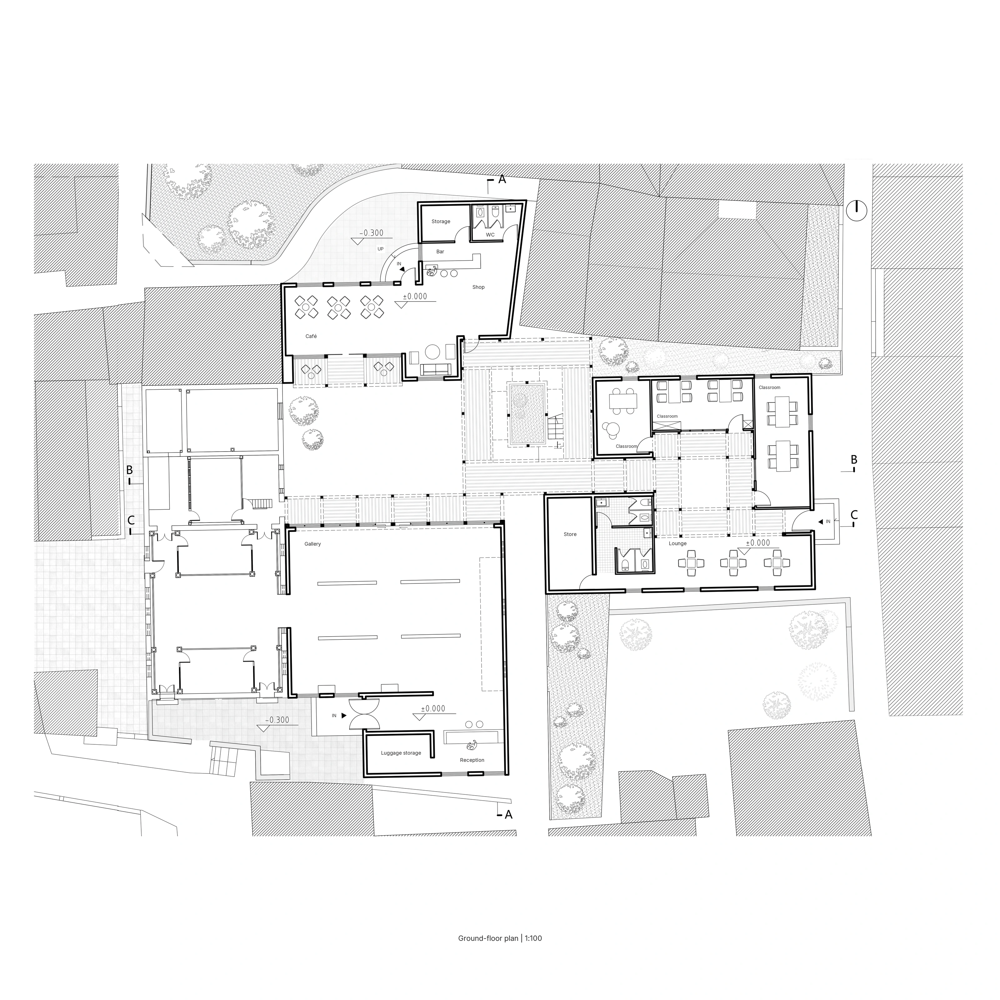
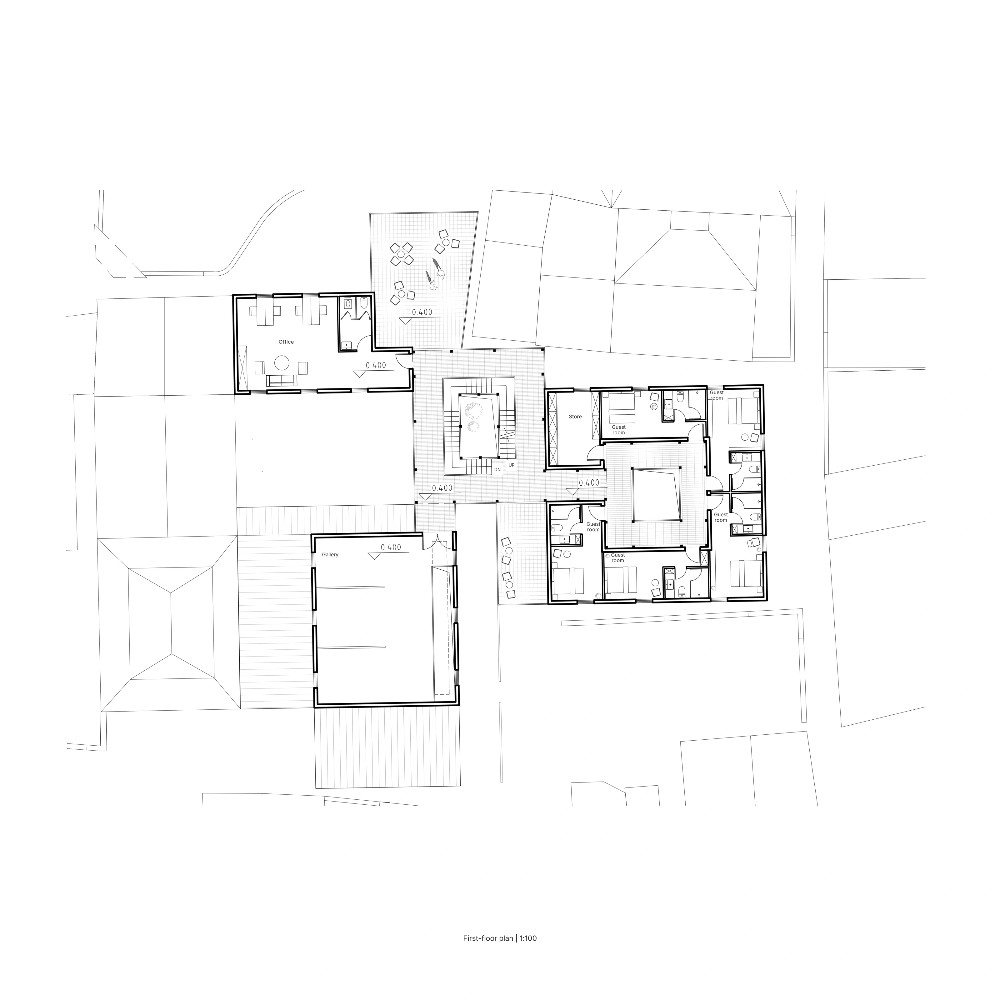
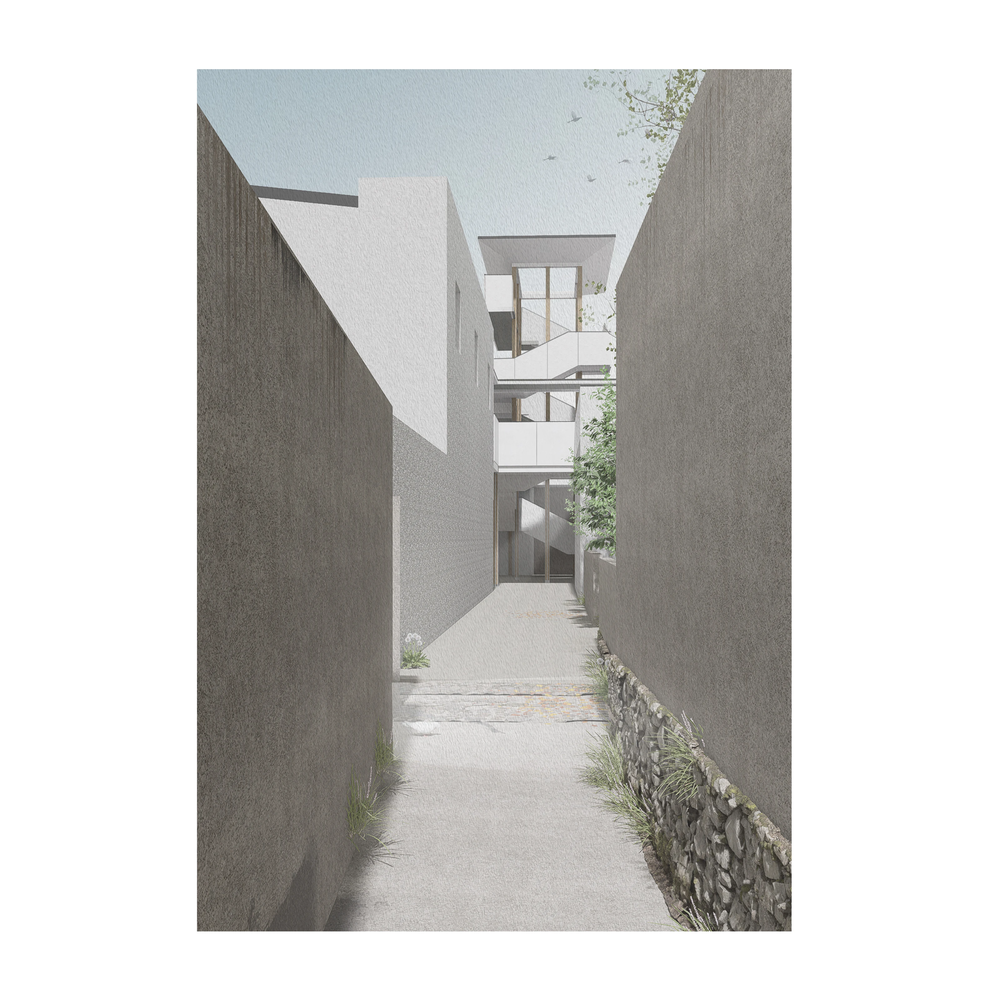
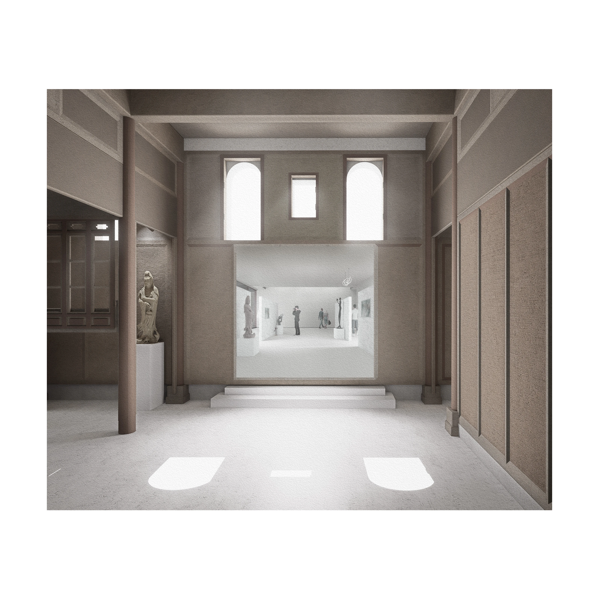
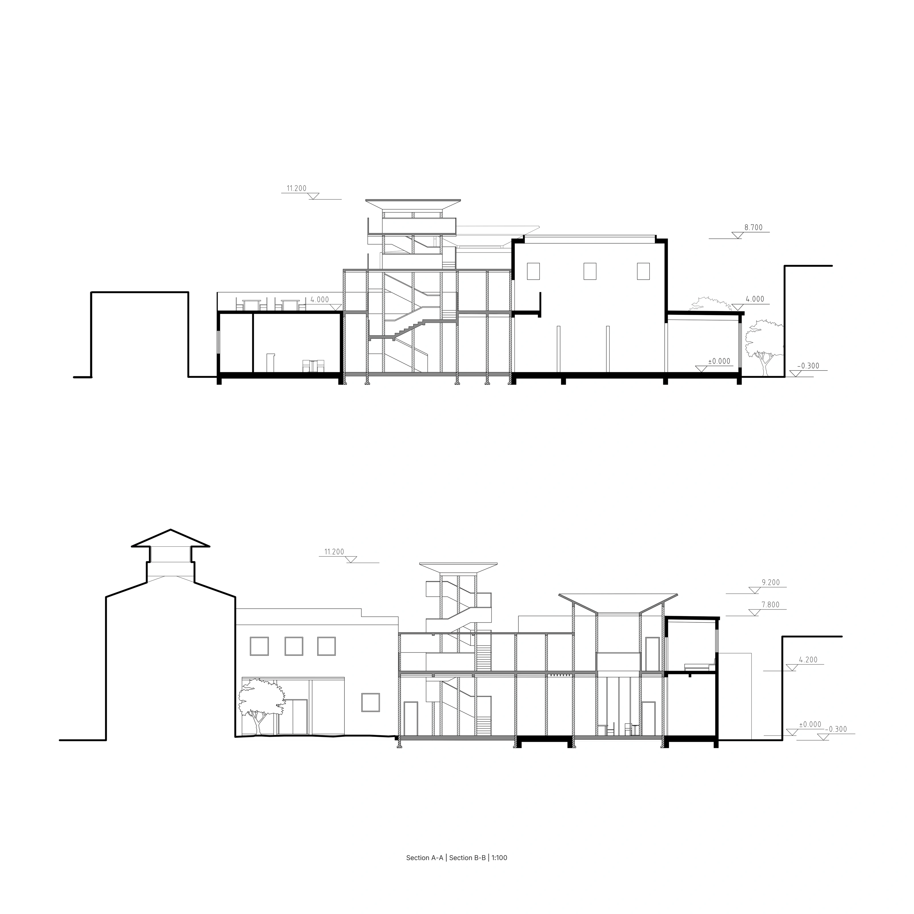
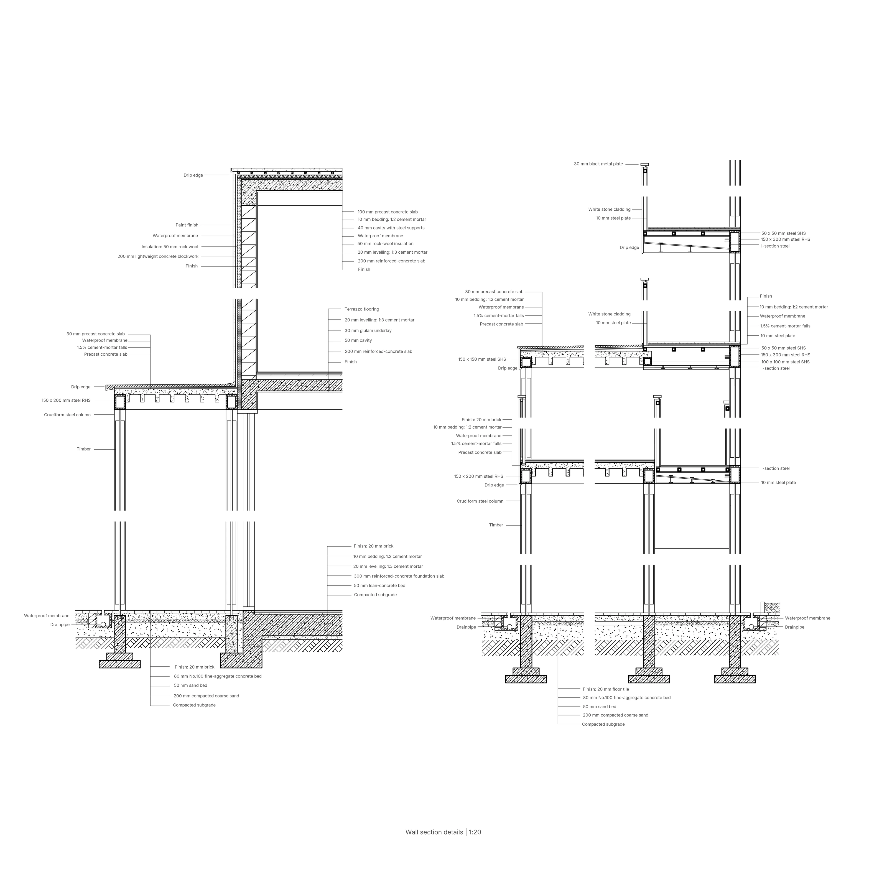

Architecture | Cultural Center
Individual Work | 2024.09-2024.11
01
Figure–Ground & Context


Swipe to see more 01 / 02
02
Plans



Swipe to see more 01 / 03
03
Renderings




Swipe to see more 01 / 04
04
Sections & Elevations


Swipe to see more 01 / 02
05
Construction Details

01 / 01